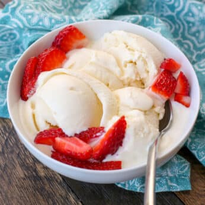

Description
Rich and creamy homemade vanilla ice cream recipe that only requires five ingredients!
Ingredients
- 1¾ cups heavy cream
- 1¼ cup whole milk
- ¾ cup sugar
- ⅛ teaspoon fine sea salt
- 1 tablespoon vanilla extract or 1 vanilla bean split in half lengthwise or
- Optional: 2 cups of add-ins soft brownies, cookies, and blondies work great
Instructions
- Pour 1 cup of the cream into a saucepan and add the sugar, salt. Scrape the seeds of the vanilla bean into the pot and then add the vanilla pod to the pot.
- Warm the mixture over medium heat, just until the sugar dissolves. Remove from the heat and add the remaining cream, milk, and vanilla extract (if using extract).
- Stir to combine and chill in the refrigerator.
- When ready to churn, remove the vanilla pod, whisk mixture again and pour into ice cream maker.
- Churn according to the manufacturers instructions. Transfer the finished ice cream to an airtight container and place in the freezer until ready to serve. Enjoy!